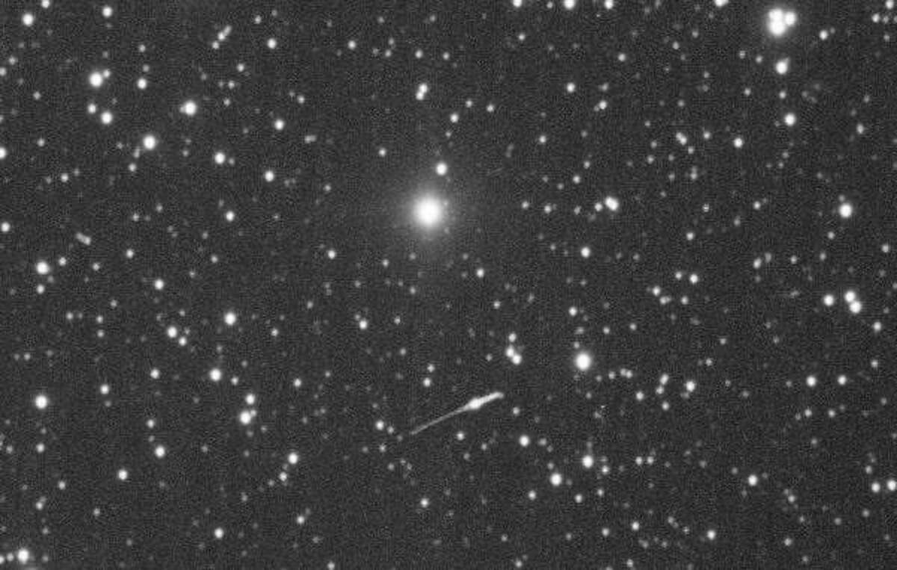

2021-Present
I operated telescopes such as a 16" motorized Meade and a 12.5" Dobsonian, as well as a variety of smaller telescopes. I participated in monthly science outreach programs and taught visitors about astrophysical phenomena. I also tracked, imaged, and recorded spectroscopy of astronomical objects, including the asteroid Psyche and the James Webb Space Telescope.
We imaged the JWST twice, once while it was on its way to Lagrange point 1 and once at Lagrange point 2. Read the article about our second imaging here.

The Webb's path of motion at Lagrange Point 2.